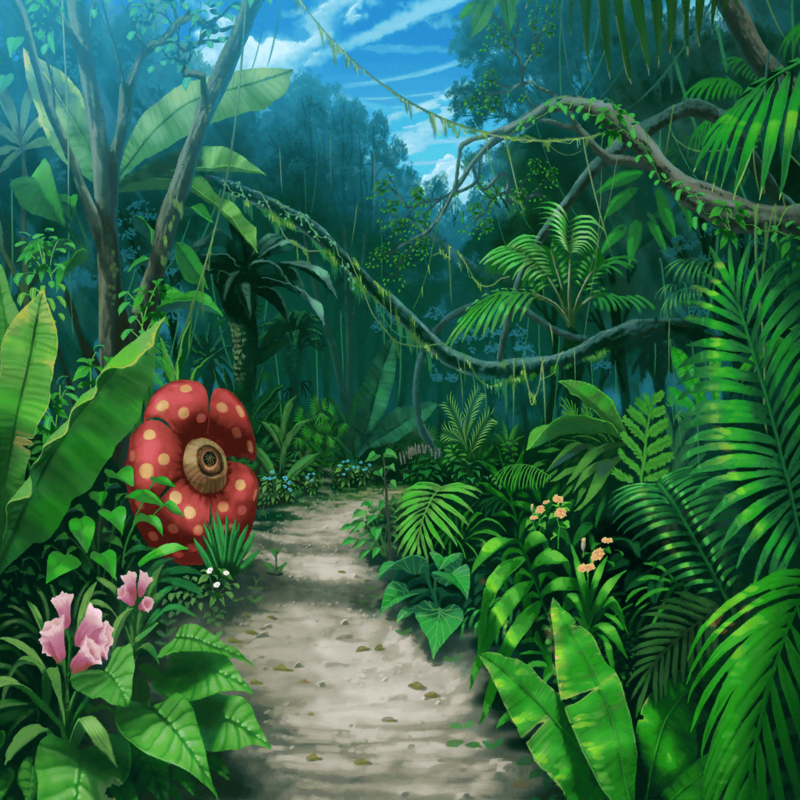

無人島 山の吊り橋
日菜
だいぶ登ってきたけど……
わっ、みんな見て見てー！
ここにおっきな吊り橋があるよー！
麻弥
うわ～、この先に向かうには、
この吊り橋を渡るか、１回下りて川を渡るしか
道はなさそうですね
彩
下りるってことは、また上るってことでしょ？
それはさすがにキツイかも……
千聖
それなら、この吊り橋を渡るしかないわね
イヴ
こ、この吊り橋を……渡る……
……ゴクリ
麻弥
なるほど。見た感じ、それなりに補強はされてますけど、
足場と足場の隙間も大きいですし、
渡るのにはかなり怖い吊り橋ですね……
彩
す、隙間から下の川が見えてる……！
や、やっぱり他のルートを探したほうが……
麻弥
確かに、ちょっと危険かもしれないですね。
それじゃあ、別のルートを――
スタッフ
いえ、ちょっと待って下さいっ！ それは困りますっ！
目的地の花畑は、間違いなくこの先にあります！
千聖
困るというのは……？
スタッフ
え、えーと……
つ、次のミッション、いってみましょう！
彩
次のミッションって……こ、こんなところでですか！？
ていうか、私たちまだ花畑を見つけるっていうミッションの
途中のはずじゃ……！？
スタッフ
え、えーと……これは特別ミッションです！
ミッションの内容は、
『この吊り橋を、全員渡りきる！』です！
彩
や、やっぱり……っ！！
千聖
（スタッフさんのこの空気……
画的にも尺的にも物足りないから、
きっと急遽、ミッションを追加したわね）
日菜
わあ～、いいじゃんいいじゃん！
すっごく楽しそー！
彩ちゃんっ！ 早く渡ろーよ！
彩
ま、待ってっ、日菜ちゃん！
腕を引っ張らないで～っ！
日菜
なんでー？ いいじゃん一緒に渡ろーよー！
彩
ま、まだ、心の準備が……
日菜
心の準備なんて必要ないって♪
だって橋を渡るだけだよ～？
ほらほら、彩ちゃん、ゴーゴー！
彩
ちょ、ちょっと日菜ちゃんっ！？ ダメ～～～！！
日菜
わわわわーっ！ すごい、すごい！
彩ちゃん、見て見て！
下の川が、あんなに小さく見えるよっ！
彩
……ご、ごめんね……私の代わりにじっくり見ておいて……
彩
……うわっ！ きゃ、きゃああああ～～～っ！
な、なんか、すっごい、ゆ～れ～て～る～ぅぅ！！！！
日菜
あはははは～！
この橋、ちょっと飛び跳ねるだけで、こんなに揺れるよー♪
彩
す、ストーーーップっ！！
日菜ちゃん！ ダメ！ やめて！ ストーーーップ！！
日菜
ダメ？ えー、なんでー？
彩
……ダメ。絶対ダメ……
そ……それに、後ろからみんな……来てるから……
千聖
ひ、日菜ちゃん、お願いだから揺らさないで……っ！
イヴ
心頭滅却すれば南無阿弥陀仏……
心頭滅却すれば南無阿弥陀仏……
麻弥
イヴさん……
間違ってるだけでなく、すごく縁起が悪いです……！
日菜
うーん……
やっぱり揺れてるほうが、るんってこない？
彩
きゃああああ！ ひ、日菜ちゃんってばーっ！
彩
私……も、もうダメ……かも……
これ以上、動けない……進めない……
彩
うぅ、怖いよぉ……
み……みんな、ごめんねぇ……
麻弥
あ、彩さん……！ 大丈夫ですかっ！？
彩
私……このミッションだけは……
麻弥
だ、ダメです……彩さん。
諦めちゃ、ダメですっ！
彩
……え？
麻弥
すみませんイヴさん、前に行かせてもらいますっ！
彩
ま、麻弥……ちゃん……？
麻弥
しっかりして下さい！
こんなところで立ち止まっちゃダメです！
麻弥
彩さんは今までどんな困難があっても、
この吊り橋よりも険しい道を、諦めずに
進んできたじゃないですか！
麻弥
それなのにここで止まったら、
彩さんのこれまでのアイドル人生を
否定することになりますよ！
麻弥
ジブンの腕に掴まって下さい！
１人で進めないなら、ジブンが彩さんの背中を押します。
こんなところで、絶対彩さんのアイドル人生を終わらせません！
彩
ま、麻弥ちゃん……う、うん、そうだよね！
何があっても諦めないのが『丸山彩』だもんね！
ありがとう……私、頑張るよ！
麻弥
はい！
一緒にこの道を進みましょう！
スタッフ
……す、すごい気迫だな

１０分後
彩
はぁ……はぁ……はぁ……や、やった……
私、渡りきることができたよ～！
麻弥
やりましたね、彩さん！
彩
麻弥ちゃんのおかげだよー！
本当にありがとう！
イヴ
私もマヤさんの言葉に勇気をもらったおかげで
なんとか渡りきることができました！
千聖
あの時の麻弥ちゃんの気迫、すごかったわね
日菜
ねえねえ、あの時の彩ちゃん、顔赤くしてたよね？
なんでー？
彩
えっ！？ ほ、ホント！？
なんか麻弥ちゃんがカッコよくて
ちょっとドキドキしちゃったのかも……
日菜
それって、吊り橋効果ってやつかなー？
麻弥
あはは……ジブンも咄嗟のことでよく覚えてないですけど、
みんなの役に立ったみたいでよかったです
麻弥
実はジブンも高いところがそんなに得意じゃなくて……
だから、ミッションクリアできてよかったです
彩
えっ！ そうだったの？
全然そんな感じしなかったよ～！
麻弥
だ、だって……ジブンも必死でしたからっ！
麻弥
もう、ジブンも本当に怖かったんですからね～！！
日菜さん、揺らしすぎですよ～！！
日菜
そうかな～？ ごめんごめん！
彩
けど、意外だよね？
麻弥ちゃんが高いところ苦手だったって
千聖
ちなみに彩ちゃんが苦手なものは？
彩
え、えっと…………………………
……………………………………
………………………………本番
日菜・千聖・イヴ・麻弥
…………なるほど